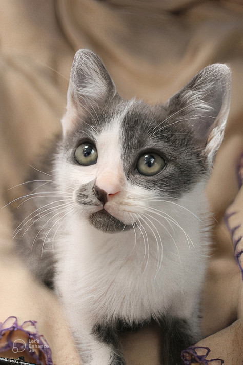
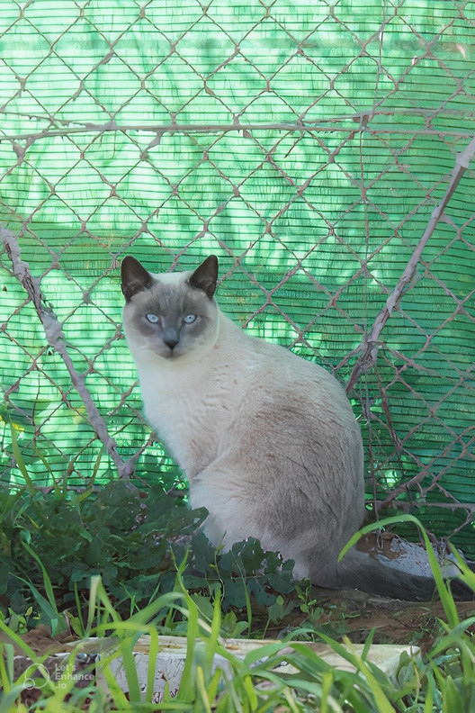
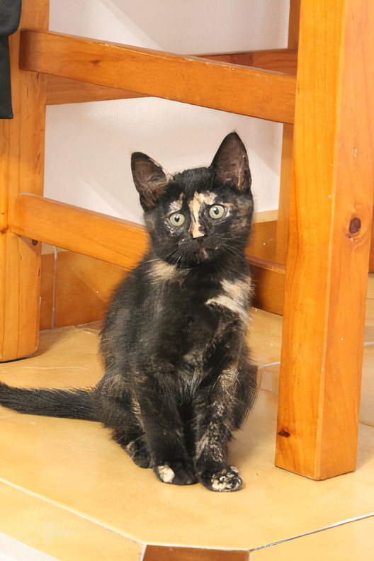

BLOG

Leer más
¿Qúe tengo que hacer para adoptar un gato?
Pasos para adoptar
Te explicamos los pasos que tienes que seguir si quieres adoptar alguno de nuestros gatos.
Nuevos
22 Oct 2023
31 Oct 2023
31 Oct 2023

Firma de convenio para el CER
Se firma un convenio entre la Plataforma CER Chipiona y el ayuntamiento para el control de las colonias.
Leer más

Beneficios de adoptar un gato
Diferentes estudios han demostrados los beneficios que tiene convivir con un felino. En este artículo te lo explicamos
Leer más